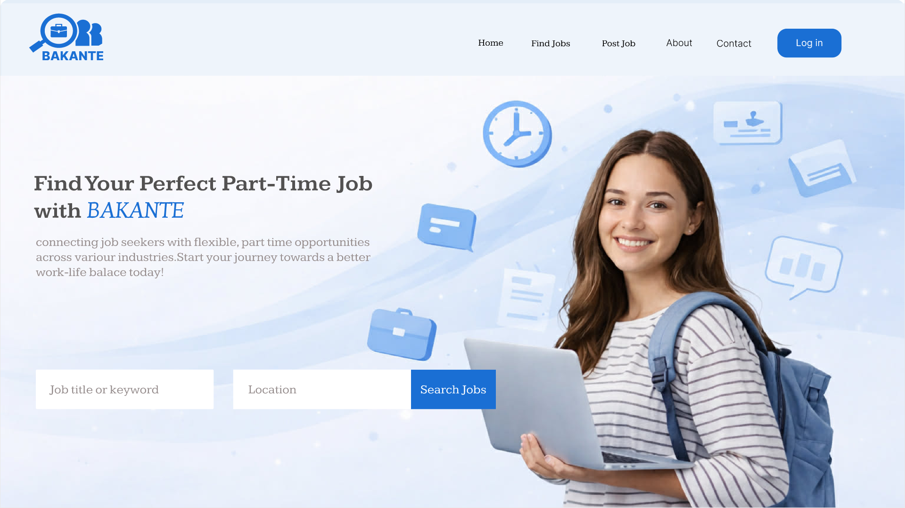
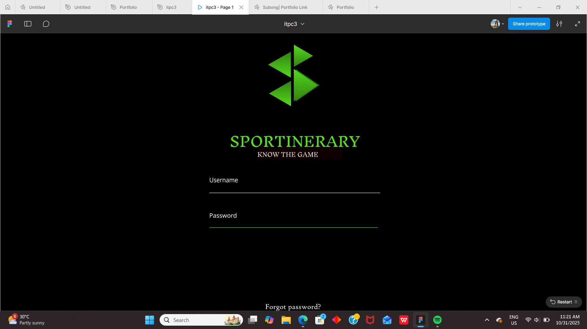
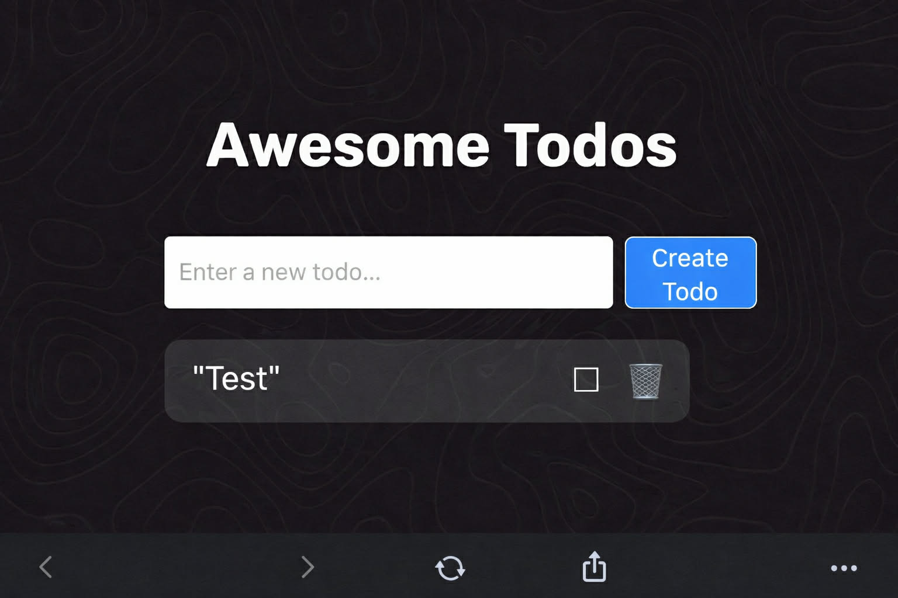
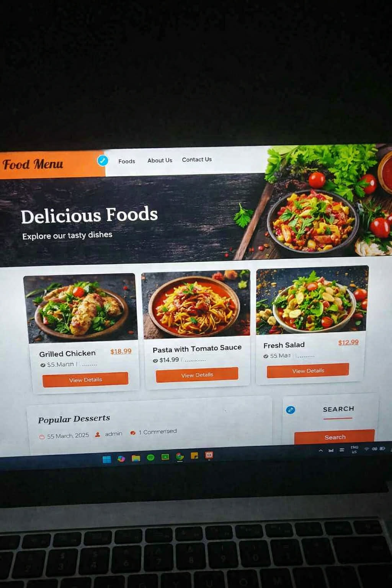
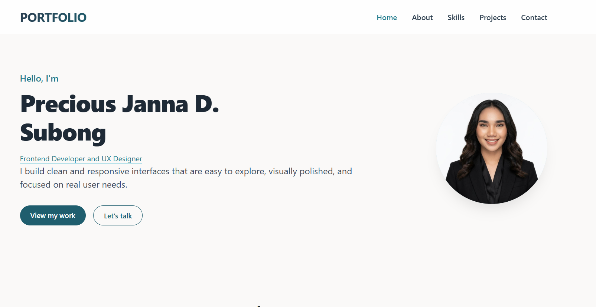

Precious Janna D.
Subong
Frontend Developer and UX Designer
I build clean and responsive interfaces that are easy to explore, visually polished, and focused on real user needs.

About Me
I am an aspiring Frontend Developer and UX Designer currently a 2nd year BSIT student. I am passionate about designing and developing modern, user-friendly websites. I continuously learn and improve my skills to create clean, responsive, and meaningful digital experiences.
🎓 Education: Bachelor of Information Technology
💡 Focus: UI/UX, Frontend, Prototyping
📍 Location: Zarraga, Iloilo
📆 Age: 20 years old
Skills
Featured projects

BAKANTE
BAKANTE is a web-based platform designed to bridge the gap between job seekers and employers offering part-time and flexible work opportunities. Drawing its name from the Filipino word for "vacant," the app focuses on utilizing free time productively. It allows users to browse available job postings or post their own job offers, making it easier for students, freelancers, and anyone with available hours to find suitable work in their local area.
Web App Project
Sportinerary
Sportinerary is your ultimate sports companion! Never miss a game, match, or tournament again. From local leagues to major competitions, this app keeps you updated with real-time schedules, scores, and event details all in one place. Plan your sports viewing experience and stay in the loop with everything happening in the world of sports.
Mobile App Project
Awesome Todos
A clean todo list app with create, complete, and delete actions. This project focuses on simple task management, polished UI styling, and smooth everyday usability.
Web App Project
Food Menu
The Food Menu Website is a responsive web design project developed to showcase a restaurant’s food offerings in an organized and visually appealing way. The site features sections such as Foods, About Us, and Contact Us, providing users with easy navigation and a user-friendly experience.
Web App Project
Portfolio
My Personal Portfolio is a digital showcase of my skills, projects, and achievements as a developer. It serves as an online resume where you can explore the different applications and systems I have created—from task managers to event trackers and job platforms. This portfolio highlights my journey, creativity, and technical expertise in building functional and user-friendly websites and mobile apps.
Web-based ProjectLet's connect
📩 Contact Me!